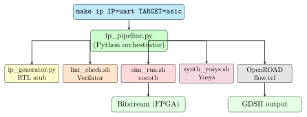

Chapter 11: The Automation Pipeline¶
By now you have seen every stage of the FPGA/ASIC design flow: from writing RTL in SystemVerilog, through simulation and synthesis, to place-and-route and tapeout signoff. In practice, running these stages manually — typing commands one by one — is impractical for real projects. A single design change might require re-running synthesis, re-running PnR, re-running STA, and re-running DRC/LVS.
This chapter shows how the project automates the entire flow with Python scripts, Makefiles, and a master orchestration engine.
Analogy: The Automation Pipeline as a Factory Assembly Line
Imagine a car factory. Each workstation performs one operation: weld the frame, install the engine, paint the body. The conveyor belt connects them all, moving each car automatically from one station to the next without human intervention. The automation pipeline in this project is that conveyor belt — a shell command triggers the whole flow, and the output is a GDS or bitstream with no manual steps in between.
11.1 The Big Picture¶

11.2 The Makefile Entry Point¶
The file scripts/makefile/Makefile is the user-facing entry point. It exposes simple commands that chain together the Python scripts and shell scripts beneath.
# Prototype an IP block on FPGA (Arty A7)
make ip IP=uart_16550 TARGET=fpga BOARD=arty_a7_35t
# Run full ASIC flow to GDSII (Sky130A)
make ip IP=uart_16550 TARGET=asic PDK=sky130
# Run simulation only
make sim IP=uart_16550
# Run linting only
make lint IP=uart_16550
# Run formal verification
make formal IP=uart_16550
# Clean all build artefacts
make clean IP=uart_16550
# Generate a new IP stub from a YAML specification
make gen SPEC=pipeline/templates/ip_spec_template.yaml
# Default PDK and board
PDK ?= sky130
BOARD ?= arty_a7_35t
ip: lint sim
ifeq ($(TARGET), fpga)
bash scripts/bash/fpga_build.sh $(IP) $(BOARD)
else ifeq ($(TARGET), asic)
python pipeline/automation/ip_pipeline.py \
--ip $(IP) --pdk $(PDK) --target asic
endif
lint:
bash scripts/bash/lint_check.sh rtl-templates/
sim:
bash scripts/bash/sim_run.sh \
rtl-templates/peripherals/$(IP).sv \
verification/tb-templates/$(IP)_tb.sv tb
gen:
python scripts/python/ip_generator.py --spec $(SPEC)
.PHONY: ip lint sim gen formal clean
11.3 The Python Orchestrator¶
The file pipeline/automation/ip_pipeline.py is the master orchestration script. It reads a YAML specification for an IP block and drives the entire flow programmatically.
11.3.1 How the Orchestrator Works¶
#!/usr/bin/env python3
"""
ip_pipeline.py --- Master RTL-to-GDSII / RTL-to-Bitstream orchestrator.
Usage: python ip_pipeline.py --ip uart_16550 --pdk sky130 --target asic
"""
import subprocess, sys, pathlib, yaml, argparse, logging
log = logging.getLogger(__name__)
STAGES_ASIC = ["lint", "sim", "synth_yosys", "floorplan",
"placement", "cts", "routing", "sta", "drc_lvs"]
STAGES_FPGA = ["lint", "sim", "vivado_synth", "vivado_impl",
"vivado_bitstream"]
def run(cmd: list, cwd=None) -> int:
"""Run a shell command; return exit code."""
log.info("Running:
result = subprocess.run(cmd, cwd=cwd)
if result.returncode != 0:
log.error("FAILED at stage:
sys.exit(result.returncode)
return 0
def main():
parser = argparse.ArgumentParser()
parser.add_argument("--ip", required=True, help="IP block name")
parser.add_argument("--pdk", default="sky130")
parser.add_argument("--target", choices=["asic", "fpga"], default="asic")
parser.add_argument("--board", default="arty_a7_35t")
args = parser.parse_args()
stages = STAGES_ASIC if args.target == "asic" else STAGES_FPGA
log.info("Starting pipeline: ip=
args.ip, args.pdk, args.target)
for stage in stages:
if stage == "lint":
run(["bash", "scripts/bash/lint_check.sh",
f"rtl-templates/peripherals/{args.ip}.sv"])
elif stage == "sim":
run(["bash", "scripts/bash/sim_run.sh",
f"rtl-templates/peripherals/{args.ip}.sv",
f"verification/tb-templates/{args.ip}_tb.sv", "tb"])
elif stage == "synth_yosys":
run(["bash", "scripts/bash/synth_yosys.sh",
args.ip,
f"rtl-templates/peripherals/{args.ip}.sv",
args.pdk])
elif stage == "floorplan":
run(["openroad", "-exit",
f"eda/openroad/{args.ip}/floorplan.tcl"])
# ... (remaining stages follow the same pattern)
log.info("Pipeline complete --- all stages passed!")
if __name__ == "__main__":
logging.basicConfig(level=logging.INFO,
format="
main()
11.4 IP Generation from YAML Specification¶
The file scripts/python/ip_generator.py generates SystemVerilog RTL stubs, register maps, and testbench skeletons from a compact YAML specification. This saves hours of boilerplate typing.
11.4.1 The IP Specification Format¶
# IP block specification --- edit and run `make gen SPEC=this_file.yaml`
name: my_counter
description: "32-bit AXI4-Lite addressable counter"
version: "1.0"
author: "your_name"
interface: axi4_lite # axi4_lite | wishbone | apb | native
data_width: 32
addr_width: 5
clock: clk
reset: rst_n
reset_polarity: active_low
registers:
- name: COUNT
offset: 0x00
access: RO # RO | RW | WO | W1C
reset: 0x00000000
fields:
- name: value
bits: "31:0"
description: "Current counter value"
- name: CTRL
offset: 0x04
access: RW
reset: 0x00000000
fields:
- name: enable
bits: "0"
description: "Set 1 to enable counting"
- name: clear
bits: "1"
description: "Write 1 to reset counter to 0"
parameters:
- name: COUNT_WIDTH
value: 32
description: "Bit width of counter"
11.4.2 What the Generator Produces¶
Running make gen SPEC=my_spec.yaml creates:
-
rtl-templates/peripherals/my_counter.sv— AXI4-Lite slave with all registers pre-wired. -
verification/tb-templates/my_counter_tb.sv— Testbench skeleton with AXI4-Lite write/read tasks. -
docs/my_counter_regmap.md— Human-readable register map. -
ip-library/my_counter/my_counter.core— FuseSoC descriptor.
def generate_sv(spec: dict, out_path: pathlib.Path):
"""Generate SystemVerilog AXI4-Lite slave from YAML spec."""
regs = spec["registers"]
n_regs = len(regs)
dw = spec.get("data_width", 32)
aw = spec.get("addr_width", 5)
name = spec["name"]
lines = []
lines.append(f"// Auto-generated by ip_generator.py --- DO NOT EDIT")
lines.append(f"module {name} #(")
for p in spec.get("parameters", []):
lines.append(f" parameter int {p['name']} = {p['value']},")
lines.append(f") (")
lines.append(f" input logic clk,")
lines.append(f" input logic rst_n,")
lines.append(f" // AXI4-Lite slave ports")
lines.append(f" input logic [{aw}-1:0] s_axi_awaddr,")
# ... (remaining ports follow)
lines.append(f");")
lines.append(f"")
lines.append(f" // Register array")
lines.append(f" logic [{dw}-1:0] regs [0:{n_regs-1}];")
# ... (write/read logic follows)
lines.append(f"endmodule")
out_path.write_text("\n".join(lines))
11.5 Register Map Generator¶
The file scripts/python/regmap_gen.py takes the same YAML specification and generates documentation in Markdown, HTML, or C header format — making it easy to share the register map with software engineers writing firmware.
# Markdown (for documentation)
python scripts/python/regmap_gen.py \
--spec pipeline/templates/ip_spec_template.yaml \
--format markdown \
--out docs/my_counter_regmap.md
# C header (for firmware drivers)
python scripts/python/regmap_gen.py \
--spec pipeline/templates/ip_spec_template.yaml \
--format c_header \
--out firmware/include/my_counter_regs.h
# HTML (for web documentation)
python scripts/python/regmap_gen.py \
--spec pipeline/templates/ip_spec_template.yaml \
--format html \
--out docs/my_counter_regmap.html
The generated C header looks like:
/* my_counter_regs.h --- Auto-generated by regmap_gen.py */
#ifndef MY_COUNTER_REGS_H
#define MY_COUNTER_REGS_H
#define MY_COUNTER_BASE 0x30000000UL
/* COUNT --- Current counter value (RO) */
#define MY_COUNTER_COUNT_OFFSET 0x00
#define MY_COUNTER_COUNT_ADDR (MY_COUNTER_BASE + 0x00)
/* CTRL --- Control register (RW) */
#define MY_COUNTER_CTRL_OFFSET 0x04
#define MY_COUNTER_CTRL_ADDR (MY_COUNTER_BASE + 0x04)
#define MY_COUNTER_CTRL_ENABLE_BIT 0
#define MY_COUNTER_CTRL_CLEAR_BIT 1
#endif /* MY_COUNTER_REGS_H */
11.6 FuseSoC — IP Package Manager¶
FuseSoC is the package manager for hardware IP. It reads .core descriptor files and manages dependencies between IP blocks, just as pip does for Python packages.
# Add the local IP library as a FuseSoC library
fusesoc library add fpga-asic-pipeline .
# List all available cores
fusesoc list-cores
# Run simulation of a specific core
fusesoc run --target sim myorg:uart_16550:1.0
# Synthesise for a specific FPGA target
fusesoc run --target arty_a7_35t myorg:uart_16550:1.0
A .core file for the UART looks like:
CAPI=2:
name: myorg:uart_16550:1.0
description: UART 16550-compatible with AXI4-Lite interface
filesets:
rtl:
files:
- ../../rtl-templates/peripherals/uart_16550.sv
file_type: systemVerilogSource
tb:
files:
- ../../verification/tb-templates/uart_16550_tb.sv
file_type: systemVerilogSource
depend:
- myorg:axi4_lite_slave:1.0
targets:
default:
filesets: [rtl]
sim:
filesets: [rtl, tb]
default_tool: icarus
tools:
icarus:
iverilog_options: [-g2012]
11.7 The Complete CI Flow¶
In a professional environment, the entire pipeline runs automatically on every Git commit using Continuous Integration (CI). The project includes a GitHub Actions workflow template.
name: FPGA/ASIC CI
on: [push, pull_request]
jobs:
lint-and-sim:
runs-on: ubuntu-latest
steps:
- uses: actions/checkout@v3
- name: Install tools
run: |
sudo apt-get install -y iverilog verilator
pip install cocotb yowasp-yosys
- name: Lint all RTL
run: bash scripts/bash/lint_check.sh rtl-templates/
- name: Run simulations
run: |
for tb in verification/tb-templates/*_tb.sv; do
ip=$(basename $tb _tb.sv)
bash scripts/bash/sim_run.sh \
rtl-templates/peripherals/${ip}.sv $tb tb
done
synthesis-check:
runs-on: ubuntu-latest
needs: lint-and-sim
steps:
- uses: actions/checkout@v3
- name: Synthesise UART (generic target)
run: |
pip install yowasp-yosys
bash scripts/bash/synth_yosys.sh uart_16550 \
rtl-templates/peripherals/uart_16550.sv generic
11.8 Adding a New IP Block — End-to-End Walkthrough¶
Here is a complete walkthrough of adding a new SPI master peripheral to the project from scratch:
-
Write the specification:
cp pipeline/templates/ip_spec_template.yaml \ pipeline/templates/spi_master_spec.yaml # Edit spi_master_spec.yaml: add registers, parameters -
Generate the RTL stub:
make gen SPEC=pipeline/templates/spi_master_spec.yaml # Creates: rtl-templates/peripherals/spi_master.sv # verification/tb-templates/spi_master_tb.sv -
Implement the logic — fill in the RTL stub with the actual SPI FSM (CPOL/CPHA modes, shift register, chip-select logic).
-
Lint and simulate:
make lint IP=spi_master make sim IP=spi_master -
Add cocotb tests:
# Create verification/cocotb/test_spi_master.py # Test all SPI modes, test clock polarity, test byte transfer -
FPGA prototype:
make ip IP=spi_master TARGET=fpga BOARD=arty_a7_35t # Flash bitstream, test on hardware with a logic analyser -
ASIC flow:
make ip IP=spi_master TARGET=asic PDK=sky130 # Full RTL -> GDSII flow; inspect results in KLayout -
Add to IP library:
cp ip-library/communication/uart_16550.core \ ip-library/communication/spi_master.core # Edit spi_master.core: update name and file references fusesoc list-cores # verify it appears
11.9 Directory Structure Reference¶
project-root/
+-- pipeline/
| +-- automation/
| | |-- ip_pipeline.py # Master orchestrator
| |-- templates/
| +-- ip_spec_template.yaml # IP spec template
| |-- soc_spec_template.yaml # Full SoC spec template
+-- scripts/
| +-- bash/
| | +-- lint_check.sh # Verilator lint wrapper
| | +-- sim_run.sh # Icarus Verilog sim wrapper
| | |-- synth_yosys.sh # Yosys synthesis wrapper
| +-- makefile/
| | |-- Makefile # Top-level user entry point
| +-- python/
| | +-- ip_generator.py # RTL stub generator
| | |-- regmap_gen.py # Register map generator
| |-- tcl/
| +-- common_utils.tcl # Shared Tcl procs
| |-- run_sta.tcl # OpenSTA timing script
+-- agents/ # 9 AI agent prompts
|-- skills/ # 30+ skill markdown files
11.10 The Agent System¶
In addition to the scripted automation, this project includes a set of AI agents — specialised AI assistants, each with deep knowledge of one stage of the design flow:
| Agent | Responsibilities |
|---|---|
core-selector |
Recommend the right processor core given requirements |
rtl-design |
Write and review SystemVerilog RTL |
verification |
Create testbenches, cocotb tests, SVA properties |
fpga-proto |
Configure Vivado/Quartus, generate XDC/SDC constraints |
synthesis |
Run Yosys/Vivado synthesis, interpret area reports |
physical-design |
Drive OpenROAD floorplan through routing |
signoff |
Run DRC/LVS/STA, interpret violations |
fabrication |
Prepare tapeout package, Efabless submission |
ip-generation |
Generate full IP blocks from YAML specification |
Each agent is invoked with a skill — a markdown file containing the agent’s prompt and tool invocations. Skills are listed in SKILLS.md and invoked with /skill-name.
11.11 Summary¶
-
A
makecommand triggers the entire design flow from RTL to GDSII or bitstream without any manual steps. -
ip_pipeline.pyorchestrates all stages: lint, sim, synth, PnR, STA, DRC/LVS. -
ip_generator.pygenerates RTL, testbench, register map, and FuseSoC descriptor from a compact YAML specification. -
regmap_gen.pyproduces C headers, Markdown docs, and HTML register maps for firmware developers. -
FuseSoC manages IP dependencies; GitHub Actions runs the full pipeline on every commit.
-
Nine specialised AI agents cover every stage of the flow, invoked via skill files.
Congratulations — You Have Completed the Full Pipeline!
You now understand the complete journey from a hardware idea to a tapeout-ready GDSII file:
-
Write RTL in SystemVerilog
-
Simulate with cocotb and Verilator
-
Lint with Verilator
--lint-only -
Synthesise with Yosys to a gate netlist
-
Floorplan, place, route with OpenROAD
-
Verify timing with OpenSTA
-
Check DRC/LVS with Magic + Netgen
-
Package as GDSII and submit to Efabless MPW
The entire flow runs with a single make ip IP=myip TARGET=asic PDK=sky130.